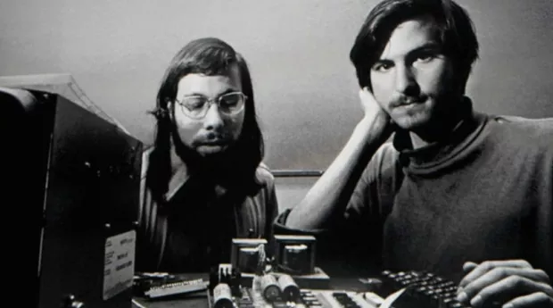
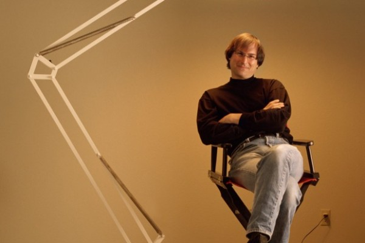

Primeiro emprego
Em 1974 Steve Jobs trabalhou como designer de videogames na Atari. Depois de vários meses Steve deixou a empresa e viajou para a Índia em busca de enriquecimento espiritual.
Criação da Apple
Em 1976 Jobs e Wozniak instalaram uma “fabrica” de computadores na garagem da casa da família de Jobs na Califórnia. Em 1976 é lançado o computador "Apple I", o primeiro computador pessoal e vendido já montado, que era apenas uma placa mãe coberta com alguns chips e instalada em uma caixa de madeira.
Em 1977 é lançado o computador "Apple II", que apresentava um mouse e um disco rígido interno. Com o passar dos anos as criações de Jobs e Wozniak revolucionaram a indústria de computadores tornando as máquinas menores e mais baratas.

Em janeiro de 1984 é lançado o "Macintosh", apelidado de "torradeira bege", que esquentava muito, pois não tinha ventilador. Apesar do sucesso das vendas e do desempenho superior aos PCs da IBM, o Macintosh não era compatível com a IBM. Centralizador e explosivo, nesse mesmo ano Steve Jobs é afastado de sua própria empresa por divergir das táticas de vendas.
Pixar
Em 1986 Steve Jobs compra a empresa de animação de George Lucas, que mais tarde se tornou a Pixar Animation Studios. Depois de investir 50 milhões de dólares na empresa, passou a produzir filmes como Toy Story e Procurando Nemo. Em 2006 o estúdio se fundiu com os estúdios Walt Disney. Next
Next
Depois de deixar a Apple, Steve Jobes criou a NEXT, uma empresa para desenvolvimento de softwares. Depois de dez anos a empresa foi comprada pela Apple. Retorno à Apple
Retorno à Apple
Em 1997 Steve Jobs retornou ao cargo de CEO da Apple e iniciou o processo de revitalização da empresa. Com uma nova equipe administrativa a Apple lançou produtos revolucionários como o “iPode”, lançado em 2001, obrigando a indústria fonográfica a se reinventar.
Em 2007 é lançado o "iPhone", celular com o comando feito com os dedos na tela digital, com acesso a internet e facilidade na criação de aplicativos. No ano de 2009 lança o computador de mão o "Netbook", pequeno e de fácil acesso a internet.
Nesse mesmo ano, lança o iPad, o novo produto da Apple. Em junho de 2011 Steve Jobs anuncia o "iCloud", que resolveria o problema de armazenamento de arquivos. Fotos, músicas e aplicativos serão guardados em "nuvens", que são potentes servidores.